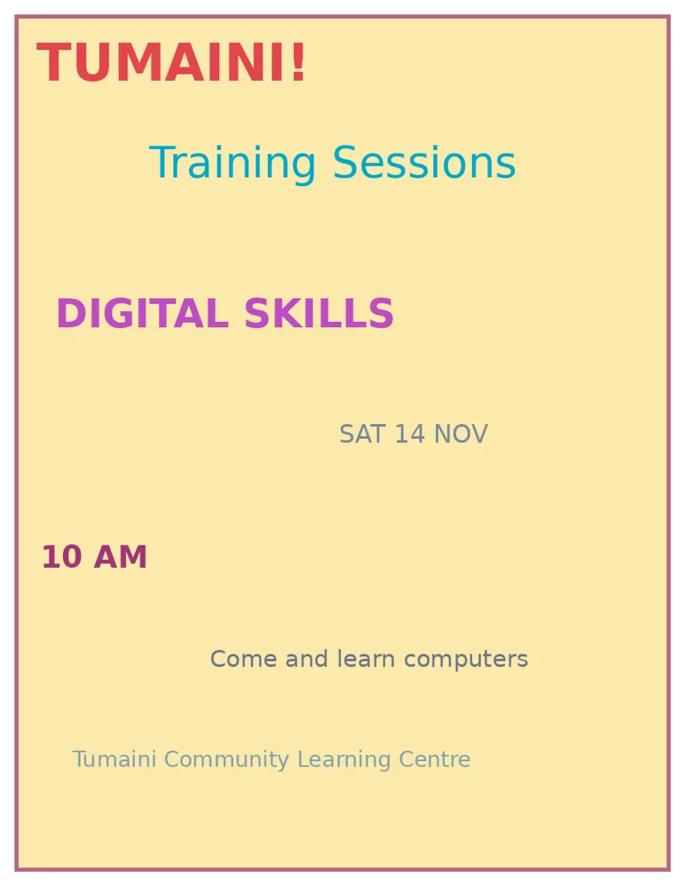

Working with Text, Images and Colour
Understand raster and vector images, readable typography and useful colour choices.
Lecture notes
Learning outcomes
- Distinguish raster and vector images and select useful formats for a publishing task.
- Apply simple typography principles to improve reading order and legibility.
- Choose a small colour palette with appropriate contrast.
- Revise a crowded notice into a clearer, reader-centred publication.
This lecture develops the graphic-design foundations introduced in Lecture 1. The focus is on decisions that students can apply immediately, even before using Photoshop, Illustrator or InDesign.
1. Raster graphics and vector graphics
1.1 Raster graphics: images built from pixels
A raster graphic, sometimes called a bitmap, stores the picture as a rectangular grid of pixels. Each pixel represents a small coloured area. The many pixels in a photograph produce the appearance of natural textures, shadows and gradual changes of colour. Phone photographs, screenshots and scanned pages are common raster images.
Raster graphics have a fixed number of pixels. For example, a photograph measuring 1,200 × 800 pixels contains 960,000 pixels. Enlarging that photograph well beyond its recorded detail can produce blurry edges or visible square blocks, a problem known as pixelation. Software may smooth the result but cannot guarantee the recovery of missing detail.
Figure 1. A small raster illustration enlarged until individual pixel blocks become visible.
1.2 Vector graphics: images built from shapes
Vector graphics describe artwork using mathematical points, lines, curves and shapes. When the graphic is enlarged, the software redraws those shapes for the required size. This is especially useful for logos, symbols, simple diagrams and drawings that must appear on materials of different sizes.
A vector illustration is not automatically better than a raster photograph. A photograph of students at a training session is likely to need many detailed tones and textures, while the Tumaini organisation symbol can usually be represented efficiently as vector artwork. One brochure may contain a raster photograph beside a vector emblem.
| Feature | Raster | Vector |
|---|---|---|
| Structure | Pixels | Paths and geometric shapes |
| Typical purpose | Photographs, scans, screenshots | Logos, icons and simple illustrations |
| Scaling up | May become pixelated | Usually retains crisp edges |
| Example format | JPEG or PNG | SVG or an editable Illustrator file |
1.3 Choosing useful image formats
JPEG/JPG. Commonly used for photographs. JPEG usually uses lossy compression, which can reduce file size but discard some image detail. It does not provide transparency.
PNG. A raster format that uses lossless compression for the stored image. It is useful when transparency, crisp edges or clear screenshots are needed, although the file may be larger.
SVG. A vector format suited to scalable icons and simple artwork. Some SVG files also contain or reference bitmap content, so the file extension alone does not guarantee that every part is vector-based.
PDF. A common format for distributing a finished publication. A PDF can contain text, vector shapes and raster pictures. It must still be inspected to confirm that it looks correct.
When saving any publication, keep an editable working file where possible and check the exported copy. A file that appears small and convenient may still be unsuitable if text has become fuzzy or important details are missing.
1.4 Cropping, resizing and image dimensions
Cropping removes part of an image near its edges to change the composition or aspect ratio. Resizing changes its intended dimensions. Cropping a picture to focus on a person is different from resizing the complete picture so it fits a frame.
Pixel dimensions such as 1,200 × 800 describe the amount of recorded image data. File size is the amount of storage the saved file occupies and also depends on format and compression. These two measurements should not be confused. Students will return to print resolution and compression in later lectures.
2. Typography: arranging text for reading
Typography concerns the choice and arrangement of type so that written information is clear and visually organised. It includes the typeface, font size, weight, spacing, alignment and length of lines. Typography is successful when readers find important information without unnecessary effort.
2.1 Typeface and style
A typeface is a family of letter designs. Georgia is an example of a serif typeface; the letters have small finishing strokes. Arial is an example of a sans-serif typeface; its letterforms have simpler ends. Neither family is always superior. The appropriate choice depends on the publication and its readers.
A font refers to a particular design implementation or variation within a typeface. For beginner publications, it is usually better to use one readable family with a small number of consistent sizes and weights than to introduce several unrelated typefaces.
2.2 Visual hierarchy and consistency
Text hierarchy shows the order in which information should be read. In a training-event notice, the main title may be large and bold, the short explanation slightly smaller, and the date and venue smaller but still clearly visible. The size and weight differences tell the reader what matters first.
Good body text also needs comfortable spacing, alignment and contrast. Placing every line at the centre or using several decorative fonts may make a notice harder to follow. The publication should remain readable on a phone, projected screen or printed page, depending on its intended use.
Figure 2. A restricted set of type sizes and colours establishes a clear reading order.
2.3 Five practical checks for readable text
- Does the title identify the publication’s main purpose?
- Can a reader scan the supporting details without hunting for them?
- Are headings and body text visibly different but consistent?
- Are line spacing and empty space sufficient for comfortable reading?
- Can the text be read against its background?
3. Working with colour
Colour attracts attention, separates groups of information and helps establish a consistent identity. It should strengthen the message rather than compete with it. A notice that uses many unrelated bright colours often becomes harder to read even though it attracts attention.
3.1 Three simple colour properties
Hue. The colour family, such as red, yellow, green or blue.
Saturation. How vivid or muted the colour appears. A highly saturated colour can be useful for limited emphasis, but too much intensity may be distracting.
Lightness. How light or dark a colour appears. Strong lightness differences between text and background can improve readability.
3.2 RGB and CMYK in context
Digital screens commonly use combinations of red, green and blue light, often called RGB. Many printing processes use cyan, magenta, yellow and black inks, called CMYK. The same design can look different on screen and paper because monitors, printers, paper and colour-management settings vary. For this module, students should recognise the basic purpose of each model and inspect their exported files or printed proofs.
3.3 Building a sensible palette
For a small educational notice, choose a dark colour for most text, a light background and one or two accent colours. Repeat these choices consistently. For instance, dark navy body text, a pale background and teal headings could make a Tumaini announcement calm and coherent. Orange might highlight the date, but it should not compete with every other detail.
A reader must not have to rely on colour alone. Instead of saying “important items are red”, also use a clear label such as “Submit today”. This is important for readers with colour-vision differences and for people who receive black-and-white printouts.
4. Bringing the three elements together
Imagine that Tumaini Community Learning Centre needs a small notice announcing a basic computer-skills session. A suitable photograph or simple icon tells readers what the activity involves. A clear headline and short body text explain the purpose. Date and venue are placed together. A restrained palette makes important details stand out without reducing legibility.
The aim is not to create the most decorative page. The aim is to make the right message immediately understandable to its intended audience.
| Element | Poor choice | Better choice |
|---|---|---|
| Image | Small logo stretched to fill half the page | Appropriately sized logo and relevant picture |
| Type | Many fonts and weak reading order | One family, clear heading and consistent body text |
| Colour | Bright colours on every line | Dark readable text, light background, limited accents |
5. Key terms and review
Raster. A pixel-based image.
Vector. A shape- and path-based image.
Pixelation. Visible blocks or blurred detail after excessive enlargement.
Typography. The purposeful arrangement of readable text.
Hierarchy. The visible order of importance.
Contrast. Difference between elements that aids identification and legibility.
Palette. A selected group of colours used together.
Review questions
Explain the difference between raster and vector graphics using one example of each.
Why might a JPEG be suitable for a photograph but unsuitable for a transparent logo?
Identify three choices that make typography easier to read.
Describe a practical three-colour palette for an educational notice.
Explain why colour alone should not communicate urgency.
What are three improvements you would make to a crowded event poster?
Further reading: the comprehensive module materials for original Lectures 02–04 contain extended explanations and additional practice. These are supplementary readings, not extra compulsory classroom lectures.
Simple practical activity
Redesign a small notice
Create a simple one-page notice with one clear title, two supporting details and a limited colour palette. Explain whether the main illustration is better saved as raster or vector.
Read the full guided practical instructions
STUDENT ACTIVITY WORKSHEET
Complete the essential activities on paper. If suitable software is available, reproduce the final design digitally after the tutorial.
Student name: __________________________________________ Registration no.: _______________________
Activity A — Choose a suitable graphic
For each item, choose raster or vector as the most useful starting point, and write one reason. More than one format may sometimes be acceptable when your reason is sound.
| Publication item | Type (raster/vector) | Reason |
|---|---|---|
| A photo of students using computers | ____________________ | ____________________________ |
| A simple book-shaped college logo | ____________________ | ____________________________ |
| A scanned handwritten letter | ____________________ | ____________________________ |
| A line icon for the notice heading | ____________________ | ____________________________ |
Activity B — Critique the first notice
Study the original notice below. Identify THREE specific problems involving typography, layout or colour. Explain briefly how each problem affects the reader.

1. Problem: ___________________________________________________________________________________ Improvement: _________________________________________________________________________________
2. Problem: ___________________________________________________________________________________ Improvement: _________________________________________________________________________________
3. Problem: ___________________________________________________________________________________ Improvement: _________________________________________________________________________________
Activity C — Sketch a clearer notice
Design a new version of the same announcement. Preserve the event name, date, time and organisation. Use a main heading, a short supporting line, one or two type styles and a limited colour palette. You may use pencil and labels.
Selected text colour: _______________________ Background: _______________________ Accent: _______________________
Activity D — Explain your design
Write three reasons why your design is easier to read than the original notice. Refer to at least one image or format choice, one text/typography choice and one colour choice.
1. ______________________________________________________________________________________________
2. ______________________________________________________________________________________________
3. ______________________________________________________________________________________________
Submission checklist
- Completed the four image choices and reasons.
- Identified three specific weaknesses in the sample notice.
- Prepared one legible notice sketch with essential event details.
- Explained three improvements using relevant design vocabulary.
Review questions
Try explaining each answer in your own words before using the quiz.
- Compare raster and vector graphics with one example of each.
- What makes text easy to read on a small poster?
- Why do RGB and CMYK matter in publishing?